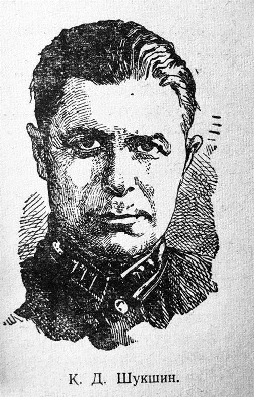
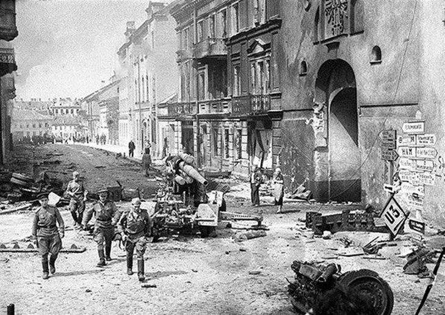
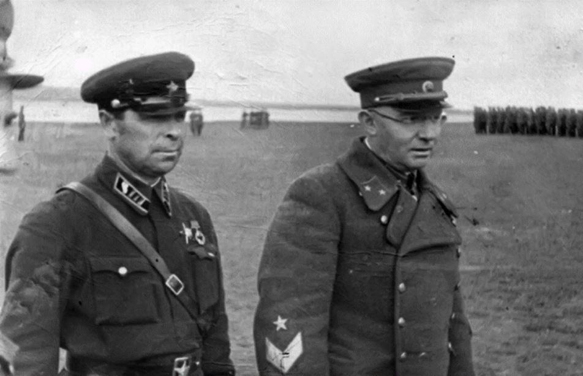
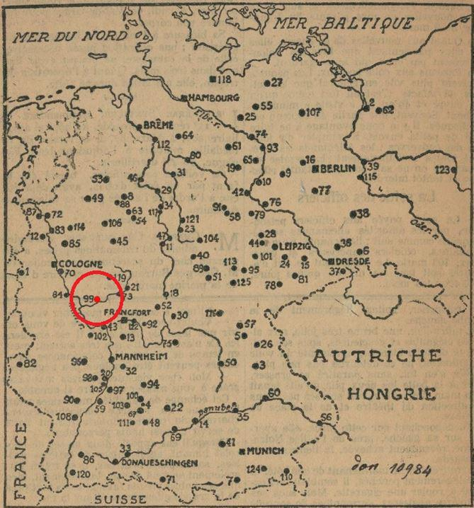
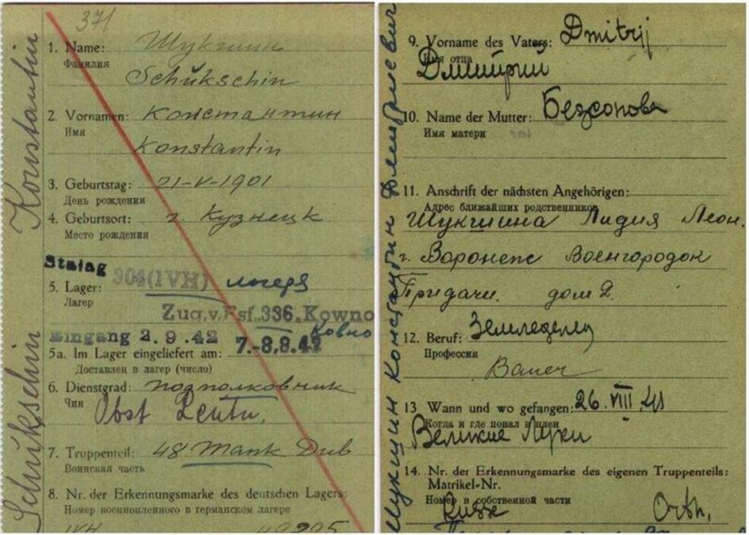
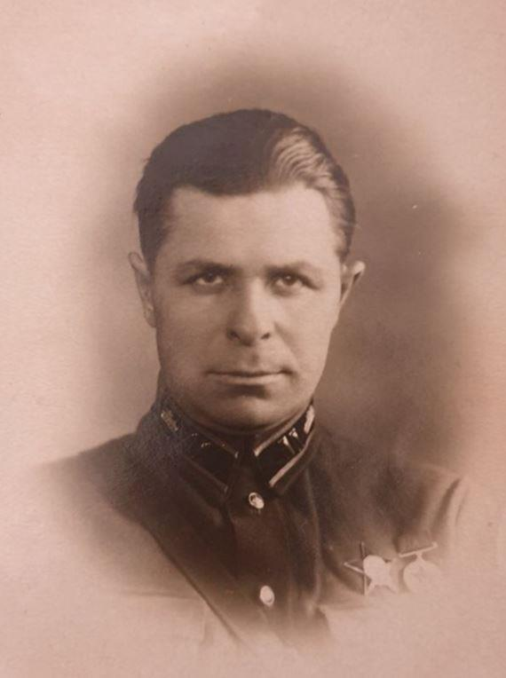
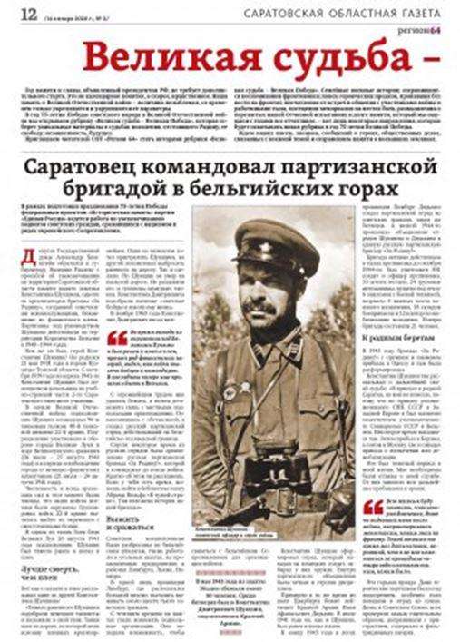
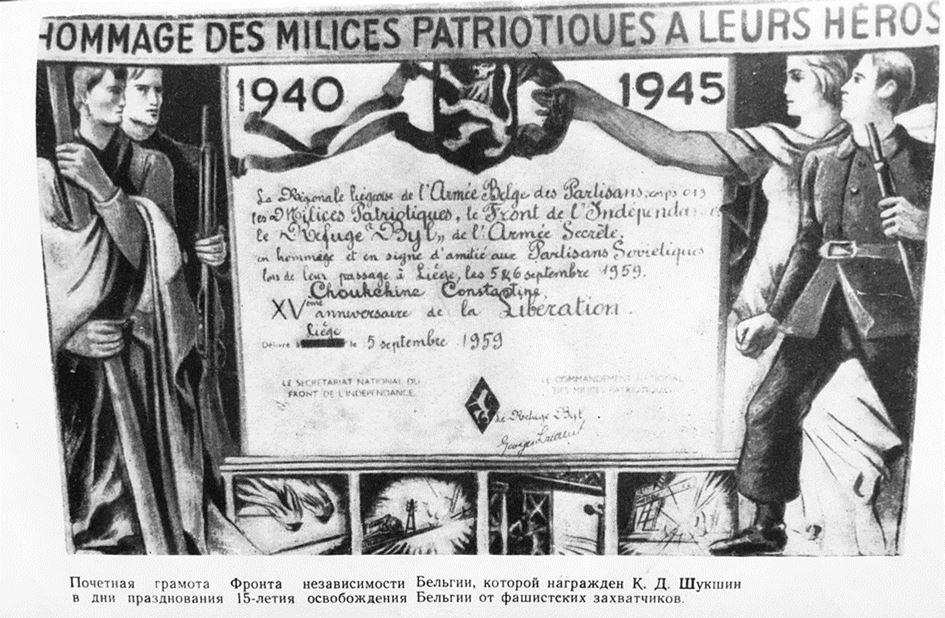
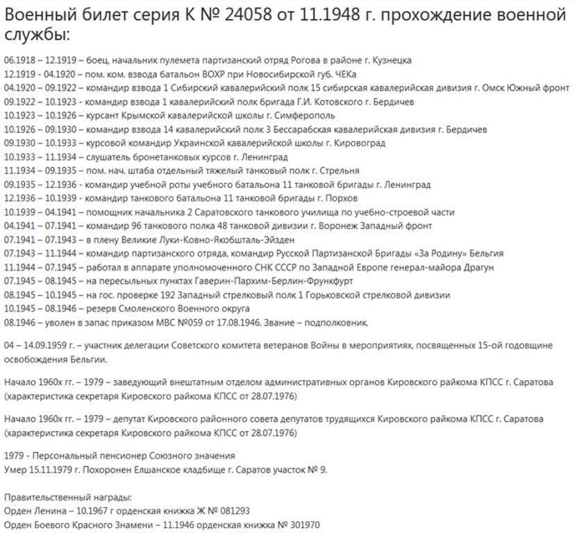
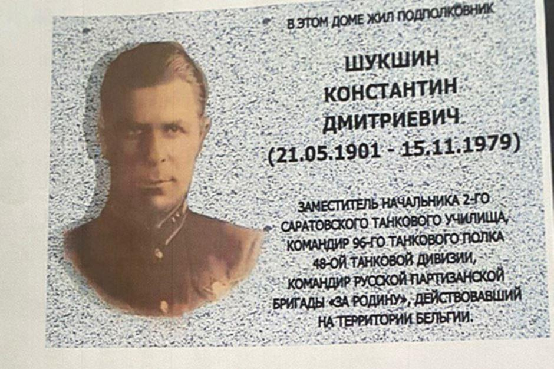

La guerre est capable de révéler les aspects les plus divers de notre personnalité et de révéler le secret profond de l'être. Plongé dans un conflit meurtrier et impitoyable, l'homme se comporte tel qu’il est. Si la peur et la mort menacent petit à petit un individu, la nécessité de faire des choix, de les réaliser et d’agir conformément à son caractère et ses convictions devient le moteur de sa vie. La Seconde Guerre mondiale a révélé de nombreux héros qui ont défendu leur patrie, prêts à mourir pour ceux qui lui sont cher. Konstantin Dmitrievich Shukshin fut un militaire vaillant avant la guerre, mais durant celle-ci, se jouant des difficultés, il est devenu ce que nous connaissons : un héros.
Konstantin Dmitrievich Shukshin est né le 21 mai 1901 dans la ville de Kuznetsk. On sait peu de choses sur sa jeunesse, sa biographie n’en n’est pas moins est très riche en divers événements, parfois incroyables. À l’âge de 35 ans déjà, Konstantin Dmitrievich reçoit l'Ordre de la Bannière rouge.
Au début de la Grande Guerre patriotique, le lieutenant-colonel Konstantin Dmitrievich Shukshin était le commandant du régiment de chars 96 de la 48e division de chars de la 22e armée sous le commandement du Major-Général des troupes blindées Ivan Antonovich Vovchenko.
Son unité a participé à la défense de la ville de Velikié Louki (16 juillet – 27 août 1941) et à la première libération de la ville des envahisseurs fascistes allemands (21 juillet-24 août 1941).

Shukshin Konstantin Dmitrievich - lieutenant-colonel, commandant du 96e régiment de chars de la 48e armée de chars avec le major général Spring 1941
Durant la bataille, le nombre et la puissance de feu des forces ennemies dépassaient de loin les nôtres, ce qui eut pour conséquence que les combattants de la 22e a été encerclé et les tentatives de percée de l'encerclement ont fait l’objet de combats acharnés. Dans l'un de ces combats près de Veliki Luki, le lieutenant-colonel Konstantin Shukshin a été grièvement blessé et fait prisonnier (26 août 1941).
Konstantin Dmitrievich a transité par un certain nombre de camps nazis, mais il n'a jamais abandonné ses projets d’évasion. Il finit par échouer dans un stalag en Belgique occupée. De nombreux prisonniers de guerre soviétiques ont été dispersés dans les stalags du pays. Ils travaillaient dans des mines de charbon ou des usines dans les régions du Limbourg, de Liège et de Namur. Le plus grand Stalag était dans la province du Limbourg, on y dénombrait environ six mille citoyens soviétiques.

Localisation du camp de Limburg
(source pour le fond de carte: BNF - Gallica)
Les mines sont devenues le foyer de l'émergence d'organisations clandestines. Les prisonniers de guerre cherchaient à contacter la Résistance belge pour organiser des évasions. À la suite d'une évasion préparée, en mai 1943, une trentaine de personnes se sont échappées de la mine d’Eisden. Konstantin Dmitrievich Shukshin était l’un d’eux.
Le détachement fondé par de Konstantin Dmitrievich après son évasion était actif dans la région frontalière avec les Pays-Bas.
Le détachement de Shukshin , qui se distinguait par une discipline claire et impeccable, a rapidement fusionné avec d'autres détachements de partisans. Ainsi a été organisée la brigade de partisans « Pour la Patrie! », dont les membres étaient des prisonniers de guerre soviétiques et des résistants belges. Konstantin Dmitrievich a assuré le commandement tactique et stratégique de la Brigade jusqu'à la fin de la guerre. Le jeune Ivan Afanasyevich Diadkin était responsable du commandement opérationnel.
En 1945, les membres de la brigade « Pour la Patrie! » rentre au pays natal. Avec armes et étendard, les partisans soviétiques sont arrivés à Odessa, où leur brigade a été dissoute.
Par la suite, Konstantin Dmitrievich est retourné dans sa ville natale de Saratov. Il avait pensé y servir dans l’armée, cependant, conformément à l'ordre du commissaire SNK de l'URSS en Europe occidentale, il a été nommé commissaire adjoint du Conseil des Ministres de l'URSS en Belgique. Par la suite, Il est ensuite parti pour Berlin, puis a été envoyé à Moscou, où il attendait un ordre de nomination ou de démobilisation.
Pour Dmitry Konstantinovich, le servir la Patrie était sa raison de vivre. Le désir de servir dans l'armée le possédait entièrement. Ses camarades de combat parlaient de lui comme d'un commandant de régiment courageux, un vrai communiste dévoué à sa cause. Et malgré le soutien de son frère d’arme de la bataille de Veliki Luki, le major-général Ivan Antonovich Vovchenko, le lieutenant-colonel Shukshin n'a pas pu poursuivre une carrière militaire.
Beaucoup de partisans, en particulier ceux qui ont été fait prisonniers, ont reçu un accueil glacial à leur retour au pays. Ils ont tous été minutieusement interrogés, beaucoup ont été détenus dans des camps. Par conséquent, Konstantin Dmitrievich, comme la plupart des partisans, n'a pas annoncé son passé de combat.
Après la démobilisation, Shukshin a travaillé durant dix ans dans une usine de Saratov. Konstantin Dmitrievich, contraint de cacher son passé, se sentait mal dans son époque. Son rêve était brisé : l'armée lui a fermé ses portes. Il était devenu un homme solitaire, en exilé dans son pays. Mais il y avait un souvenir, comment une délégation de travailleurs belges est arrivée à l'usine, dans laquelle il y avait un partisan belge qui se battait avec Shukshin . Et c'était tellement incroyable qu'il (le maquisard belge) a de nouveau rencontré son commandant de brigade. Konstantin Dmitrievich, après avoir vu son camarade de combat, s'est souvenu de cette joie, de ce sentiment qui l'a soutenu dans les combats pour la libération de l'Europe du fascisme.
À Saratov, peu de gens savaient que le Héros vivait à proximité. Celui qui a versé du sang pour l'avenir et la liberté de sa patrie. Konstantin Dmitrievich n'a toujours pas été oublié par sa Patrie. En 1946, son exploit a été marqué par l'ordre de l'Étoile rouge, et en 1967, le lieutenant -colonel Shukshin a reçu la plus haute récompense d'état : l'Ordre de Lénine. Konstantin Dmitrievich est mort à Saratov le 15 novembre 1979. Son souvenir, celui de son héroïsme sont toujours vivaces. Et la chaleur de cette flamme est alimentée non seulement par nous, mais aussi par le récit d'Abraham Wolff, « Dans un pays étranger », sur les exploits des partisans de la Résistance belge.

D.A.V.
SOURCES
Abraham Wolf, Dans un pays étranger, Saratov, 1962 (Вольф А.Я. «В чужой стране». – Саратов: Саратовское книжное издательство, 1962 г. – 113 с), un article sur le projet du Régiment des immortels (Бессмертный полк // Режим доступа: https://www.moypolk.ru/soldier/shukshin-konstantin-dmitrievich) et un article publié sur le site de l'agence de presse» Région 64".( Информационное агентство «Регион 64» // Режим доступа: https://sarnovosti.ru/articles/saratovets-komandoval-partizanskoy-brigadoy-v-gorakh-belgii/)
Partager cette page